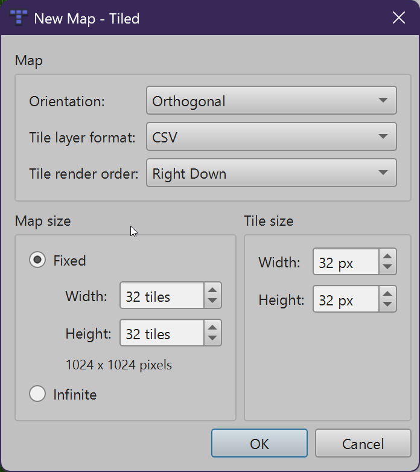
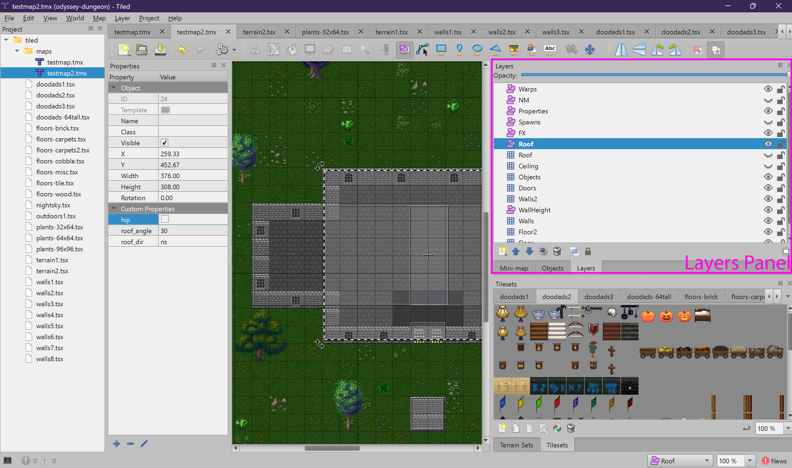
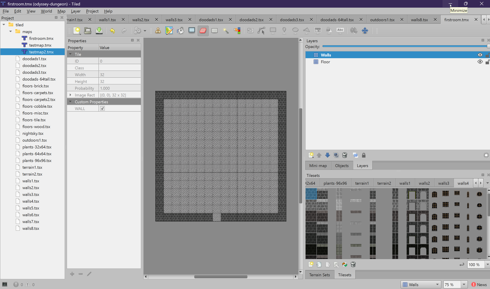

Creating a Map
Set up a new map file with the correct settings, add tilesets, and create your layers.
Creating a New Map
To create a new map, go to File > New > New Map... in Tiled. You will see the New Map dialog with several options. Set them as follows:

| Setting | Value | Notes |
|---|---|---|
| Orientation | Orthogonal |
The only supported orientation |
| Tile layer format | CSV |
Required — the engine only parses CSV format |
| Tile render order | Right Down |
Default, do not change |
| Map size | Fixed |
Choose your desired width and height in tiles (e.g., 16x16, 32x32, 64x64) |
| Tile size | 32 x 32 px |
Mandatory — hardcoded in the engine for all coordinate math |
Saving Your Map
Map files must be saved in two locations for both the game client and server to find them:
- Client:
assets/tiled/maps/ - Server:
odyssey-server/src/main/resources/tiled/maps/
The filename (without the .tmx extension) becomes the map ID used
throughout the game. For example, if you save your map as dark-cavern.tmx, its map ID
will be dark-cavern. This ID is what you use in warp targets, bootmap destinations,
and other references.
orc-camp.tmx,
forest-path.tmx). This keeps map IDs consistent and easy to type.
maps/ subfolder, tileset sources should reference
../floors-brick.tsx (one directory up). The Tiled project file handles this
automatically if you opened the project first.
Creating Layers
A map needs at least a Floor layer and a Walls layer to be functional.
You can add more layers as needed for your map's features.
To create a new layer:
- In the Layers panel, click the New Layer button (or right-click)
- Choose Tile Layer for tile-based layers, or Object Layer for zone-based layers
- Name the layer exactly as the engine expects (see the table below)

Floor,
not floor or FLOOR. If the name does not match, the engine will not
recognize the layer.
Recommended Layer Order
While layer order does not affect how the game renders the map (the engine handles that), organizing your layers consistently makes editing easier. Here is a recommended order from top to bottom in the Layers panel:
| Order | Layer Name | Type | Required? |
|---|---|---|---|
| 1 | Properties | Object | Recommended |
| 2 | Warps | Object | If map has exits |
| 3 | Spawns | Object | If map has monsters |
| 4 | NM | Object | Optional |
| 5 | Locks | Object | If map has locked doors |
| 6 | TP | Object | If map has touchplates |
| 7 | Items | Object | Optional |
| 8 | Ceiling | Tile | Indoor maps |
| 9 | Roof (tile) | Tile | If map has roofs |
| 10 | Roof (object) | Object | If map has roofs |
| 11 | Objects | Tile | Optional |
| 12 | Walls2 (tile) | Tile | Optional |
| 13 | Walls2 (object) | Object | If Walls2 needs dir control |
| 14 | Doors | Tile | If map has doors |
| 15 | Walls | Tile | Yes |
| 16 | Floor2 | Tile | Optional |
| 17 | Floor | Tile | Yes |
Building Your First Map
Let's create a simple room to get started:
- Create a new map (16x16 tiles, 32x32 tile size)
- Add the
Floortile layer - Add the
Wallstile layer - Select the
Floorlayer and paint floor tiles to fill the interior - Select the
Wallslayer and paint wall tiles around the perimeter, leaving gaps for doorways - Add a
Propertiesobject layer and create an object with anameproperty for your map's display name - Save the file to both map directories

In the next chapters, you will learn about each layer type in detail — what it does, what properties it uses, and how the game engine interprets it.